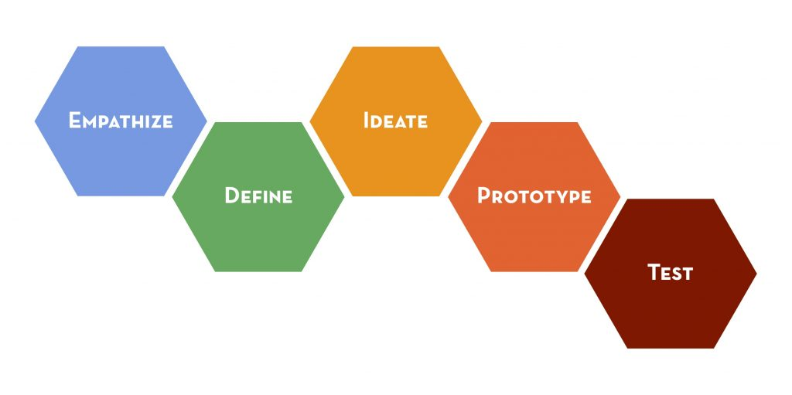

Project 04 · Advance Care Planning · Elderly-Friendly App
Design Thinking Case Study"陪你想想" — An Elderly-Friendly
Companion App for Advance Care Planning
將「設計思考」導入預立醫療決定（ACP）產品開發之實踐
Built with experts who insisted "this is just a prototype — don't overbuild it," 陪你想想 (acp_care) helps seniors and their families ease into Advance Care Planning (ACP). Instead of pushing forms, it lowers death anxiety, delivers content matched to each person's TTM readiness stage, and gently nudges families to talk — the cultural core in Taiwan.
- 4TTM readiness stages
- 9Voice FAQ topics
- STT + TTSVoice-first interaction
- FlutterReal APK build
從冰冷表單到溫暖對話
預立醫療決定（ACP）在傳統上是一個冰冷、嚴肅且充滿禁忌的話題。我們團隊嘗試導入設計思考，將生硬的法規表單轉化為一場溫暖的家庭對話工具。以下依 Stanford d.school 五大步驟，逐階段分享實踐歷程；後半段則深入產品與技術細節。
台灣家庭的文化痛點：難以開口的愛
在進入設計之前，我們必須先看見問題。在台灣，「預立醫療」推廣最大的阻礙不是法規，而是文化——長者怕談死，子女怕被說不孝，大家選擇逃避。最終，相當高比例的決定都是在混亂的急診室外，由焦慮的家人被迫替長者做決定。
文化禁忌
華人社會避諱談論死亡，長者心裡想卻不敢說，子女想問卻怕被說不孝。
臨終混亂
許多決策是在加護病房前，由驚慌失措的家屬迫於無奈替長者做決定。
生理障礙
現行 ACP 資訊生硬、字體小，長者視力退化、排斥填鴨式的複雜合約。
逃避與混亂
對雙方都是極大的精神折磨——本可提早溝通，卻在人生最慌亂的時刻才被迫面對。
我們的設計思考路徑
為了系統化地解決這個痛點，我們導入了完整的設計思考五步驟——從走入長者生活、重新定義核心問題、發想溫暖功能，到用 Flutter 親手打造出能實際在手機上運行的動態原型。

- 同理心 Empathize — 專家與長者訪談，挖掘冰山底下的真實心聲。
- 定義問題 Define — 重新框架 POV，將表單填寫轉為情感溝通。
- 創意發想 Ideate — 跨理論模型（TTM）導入、長者友善 UI 規範與家庭模式。
- 原型製作 Prototype — Flutter 高保真動態 App（APK）實作、語音技術整合。
- 測試與迭代 Test — 測試成果、技術反思與未來 Stretch Goals。
走入長者的真實世界
在同理心階段，我們訪談了極具臨床經驗的安寧專家，並觀察長者使用智慧型手機的習慣。長者們告訴我們：「那些切結書看起來就像要把我送進棺材，看了就很觸霉頭。」這讓我們意識到，現有系統完全缺乏人性的溫度。
研究對象
- 安寧療護專家（具 400+ 多重疾病患者臨床臨終決策經驗）。
- 65 歲以上長者及其主要照顧家屬（持續訪談與觀察中）。
關鍵洞察
長者不討厭 ACP，他們討厭的是「被強迫塞入冰冷的醫療法規」。長者渴望表達自主權，但需要有尊嚴、無壓力的引導式開口。生理痛點：無法閱讀小字，極度排斥在手機上打字輸入。
「那些切結書看起來就像要把我送進棺材，看了就很觸霉頭。」
— 長者訪談直接引言
觀點的重新框架（Reframe）
在定義問題階段，我們做了一個非常關鍵的重新框架。如果把 ACP 紙本表單照抄到手機 App 上，那不叫設計，那叫數位化。我們把目標重新定義：不是要長者「簽合約」，而是要幫長者與家人「開創一個溫馨且沒有焦慮的對話起點」。
傳統設計思維（Old POV）❌
「我們該如何設計一個介面，讓長者可以快速填寫並簽署 ACP 預立醫療表單？」
後果：將問題簡化為行政表單填寫，長者抗拒心理高，難以跨出第一步。
以人為本的設計思維（New POV）✓
「我們如何為長者與其家人創造一個低焦慮、順應心理準備進度、且能促進家庭對話的溝通工具？」
溫暖的情感機制與長者友善規範
針對新的 POV，我們發想了三大核心策略，並為生理退化的長者訂立嚴格的 UI 規範。
名稱與情感翻轉
放棄生硬的「ACP」與「預立醫療」，命名為溫柔的「陪你想想」，定義為因愛而準備的家庭陪伴。
跨理論模型（TTM）循序引導
不強推行動。針對「無意圖期」長者，先講故事、聽聽音樂；對於「準備期」長者，才引導醫療選項。
家庭換位討論模式
設計情境式數位卡片，讓子女與長者「互猜心願」，用遊戲化方式化解談論死亡的尷尬。
消除生理與認知負荷的介面規範
- 語音優先互動：全面整合 TTS 與 STT，長者只要用「聽」的跟用「說」的就能完成所有對答，免除打字痛苦。
- 長者友善 UI 視覺：文字全面大於 18pt，高對比大按鈕；一頁最多只給「兩個」核心選項，避免選擇焦慮。
- 故事化引導分流：以「阿嬌姨的故事」等情境切入，用台語／國語日常話語，取代硬邦邦的醫學專有名詞。
範例語氣：「阿伯，如果有一天我們生重病沒辦法吃東西，你想用灌食的，還是讓我們舒舒服服的走？」
高保真 Flutter APK 實作
到了原型製作階段，我們不希望只用靜態簡報來講故事。我們使用 Flutter 跨平台框架，開發出可以在真實 Android 手機上點擊、說話、互動的 APK 原型，並整合雙向語音 API，實作台語和國語的雙向問答。
- 跨平台框架：直接編譯出能在真實 Android 手機上流暢運行的高保真 APK 原型。
- 語音技術驗證：串接
flutter_tts與語音辨識 API，實作台語與國語雙向語音對答。 - 敏捷開發：專注於最核心的使用者路徑（MVP），精確呈現使用者體驗的完整閉環。
最小可行性產品（MVP）架構
| 功能模組 | 核心內容與機制 | 設計同理考量 |
|---|---|---|
| 語音問候 | 台／國語語音溫馨開場，2–3 題超簡短狀態評估 | 消除初次使用的焦慮感 |
| 階段互動內容 | 依 TTM 狀態，分流給予軟性故事或醫療選擇引導 | 尊重使用者的心理準備度，不強迫推進 |
| 雙向語音 FAQ | 關鍵字匹配技術，長者提問（台／國語）即時語音答覆 | 解決閱讀冗長 ACP 條款的視力與認知負擔 |
| 家庭陪伴模式 | 雙向情境卡片，促使長者與子女換位思考 | 破冰工具，打破華人家庭的沉默 |
專案進程與未來藍圖
在測試與迭代階段，我們不僅檢視目前的成果，更勾勒出《陪你想想》未來的發展藍圖。
當前成果（Current MVP）
核心驗證已完成
完成 Flutter 實機動態 APK、長者友善 UI 視覺規範、台國語語音對答與基礎 FAQ 技術驗證。
階段二
語音 AI 智能化（LLM Integration）
規劃將「關鍵字匹配」升級為串接 ACP 專業醫療知識庫的真實 LLM 語音助理。
階段三
數位價值卡片（Value Sorting Card）
開發「價值觀卡片排序」功能，一鍵生成並分享給親友的「專屬心願卡」。
階段四
本機進度追蹤（Local State Tracker）
導入 Local Storage，讓長者能隨時中斷旅程、隨時繼續，符合長者碎片化學習特點。
設計思考不是一套線性的公式，而是一場「以人為本」、不斷在同理與實作中循環迭代的共感歷程。
—— 《陪你想想》產品開發團隊
Why an app for Advance Care Planning?
In Taiwan, talking about future medical care and end-of-life wishes touches a strong cultural taboo. Many older adults already have wishes but don't know how to bring them up; families end up making the hardest decisions in the most chaotic moments. Interviews with a palliative-care expert (drawing on a 400+ patient, multi-morbidity cohort) shaped the whole design.
The expert's clearest instruction was: "this is just a prototype — it doesn't need every feature." What matters is hitting three things well, not piling on functions.
Three goals that drive everything
1. Lower death anxiety through emotional design · 2. Match content to TTM stage for personalization · 3. Push families to talk together — the cultural core of decision-making in Taiwan.
Designing for emotion and for aging eyes & hands
Naming: avoid the taboo words
Words like "ACP," "death," and "end-of-life" trigger strong aversion. The app uses warm, neutral names instead — the chosen one is 陪你想想 ("let me think it over with you"). The whole tone reframes planning as an act of love: "planning ahead is a way of caring."
Elderly-friendly UI
- Large type: body ≥ 18pt, headings ≥ 24pt.
- At most 2 options per screen to avoid choice overload.
- Voice on every key screen: all important text can be read aloud.
- High contrast, big buttons (at least 48×48px).
- Gentle wording: "planning ahead is a way of caring," never lecturing.
From greeting to family conversation
The journey is deliberately short and linear, so a senior can complete it without getting lost. Each stage hands off to the next, and the voice FAQ is reachable at any point.
- Spoken greeting: a warm TTS welcome sets a calm, non-threatening tone.
- 2–3 question assessment: classify readiness into unaware / thinking / preparing / acting.
- Stage-matched content: stories for the unaware, values exploration for thinkers, conversation scripts for preparers, clinic links for actors.
- Voice FAQ: ask anything, anytime, by speaking.
- Family companion mode: bring relatives into the conversation, with prompts for both sides.
Meeting people where they are
Rather than a complex questionnaire, 1–2 gentle questions place the user on the Transtheoretical Model (TTM) of behavior change. The primary pain point to serve is "already willing, but doesn't know how to start the conversation" (the preparing stage).
| Answer / mindset | Stage | What the app gives |
|---|---|---|
| "Never thought about it, don't want to talk" | Unaware | Stories & videos (e.g. "Auntie A-jiao") — light a spark, no lecturing |
| "Thought about it, but it's still vague" | Thinking | Values scenarios (extend life vs. reduce suffering) |
| "Want to talk, but don't know how to open up" | Preparing | Conversation scripts + simulated dialogue |
| "Already discussing with family / doctor" | Acting | Counseling clinic map, AD form links |
Content strategy maps to behavior-change theory: SCT observational learning for the unaware, and COM-B (motivation / capability / opportunity) across the later stages.
Speak to ask, listen to learn
Voice is central because reading small text and typing are barriers for many seniors. The app pairs on-device text-to-speech with a recording-based speech recognizer.
How it works (MVP)
- TTS: on-device
flutter_tts(zh-TW, speech rate 0.45) reads every key message. - STT:
recordcaptures audio → sent to a school API (supports Taiwanese + Chinese medical recognition). - Keyword FAQ: recognized text is keyword-matched to 9 FAQ items, then the answer is read aloud.
- Why this design: no LLM key needed, demo stays stable, and there's a graceful "didn't catch that" fallback suggesting the closest questions.
FAQ topics covered
- What is Advance Care Planning?
- What is an Advance Decision (AD)?
- The five clinical conditions
- Who can sign, and with which witnesses?
- Do I have to visit a clinic?
- What if the family disagrees?
- Can it be changed or withdrawn?
- Is this "giving up on treatment"? (No.)
- Isn't it too early to talk about this?
Advanced (stretch) option: route to a real LLM with a system prompt that keeps the assistant strictly on ACP and gentle in tone.
The differentiating feature
Because Taiwanese families decide as a unit, the standout feature invites relatives in rather than treating the senior in isolation. Interactive stories and scenario simulations help the conversation start without pressure.
- "Invite family to look together" mode for shared viewing.
- Conversation cards: separate prompts for the elder and for the relatives.
- Scenario stories (e.g. "Mr. Wang," "Auntie A-xiu"): branch choices with gentle reflections, showing why an early conversation matters.
- Values cards: five quick this-or-that questions produce a shareable "wish card" to hand to family.
Example prompt (to relatives)
Don't say "you're overthinking it." Try: "I'd really like to hear what you think."
Flutter for a real, demoable APK
The same stack as the course's reference project, so it produces a real installable APK rather than a slideshow. Built and shipped via flutter build apk --release.
| Layer | Choice |
|---|---|
| Framework | Flutter 3.22.3 |
| Text-to-speech | flutter_tts ^4.0.2 (zh-TW, rate 0.45) |
| Recording / STT | record ^6.0.0 → school API |
| Networking / audio | http ^1.3.0, just_audio ^0.9.46 |
| Storage / links | path_provider ^2.1.5, url_launcher ^6.3.1 |
| Output | release APK (per-ABI or universal) |
App structure is modular: data/ holds stage, FAQ, values, and scenario content; pages/ holds each screen; widgets/ holds reusable big buttons and voice controls.
Every design choice traces to a reason
| Design decision | Interview basis |
|---|---|
| Route content by TTM stage | "Everyone is at a different stage" |
| Avoid death-related words | "It makes people deeply uncomfortable" |
| Family companion mode | "In Taiwan, families decide as a unit" |
| App doesn't push signing forms | "Light a spark, not collect a consent form" |
| Target multi-morbidity geriatric patients | 400+ patient cohort with multiple conditions |
| Build with Flutter → APK | Same stack as the course project; real on-device demo |
What's built, and what's next
Done (MVP)
- Greeting + 2–3 question stage assessment
- One content page per TTM stage
- Voice FAQ (keyword matching, 9 topics)
- Elderly-friendly UI throughout
- Successful flutter build apk
Stretch goals
- Values-ranking interaction and shareable wish cards
- Deeper family companion mode (skeleton already built)
- Real LLM-backed voice assistant, scoped to ACP only
- Progress tracking via local storage
簡報結束 · 敬請指導
陪你想想 (acp_care) —— 用溫暖的對話，做最愛的準備。
報告團隊：MK Chou · 成大跨領域菁英計畫 | 聯絡信箱：contact@mk-chou.com